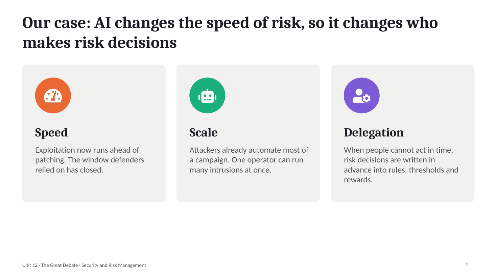
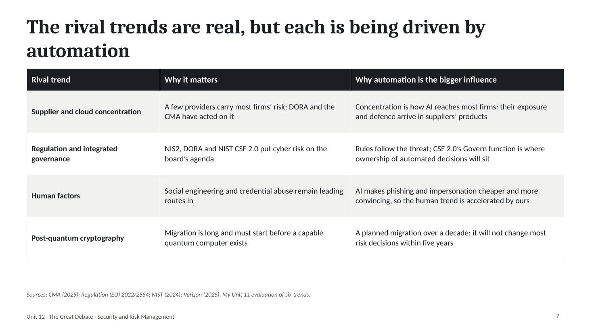
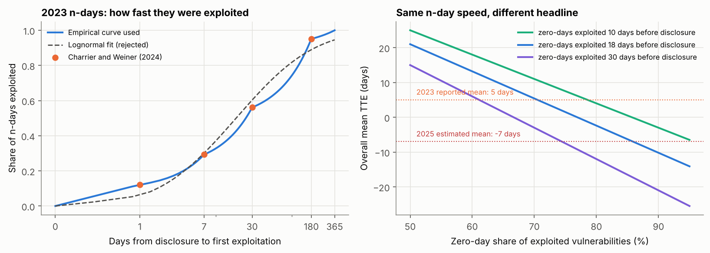
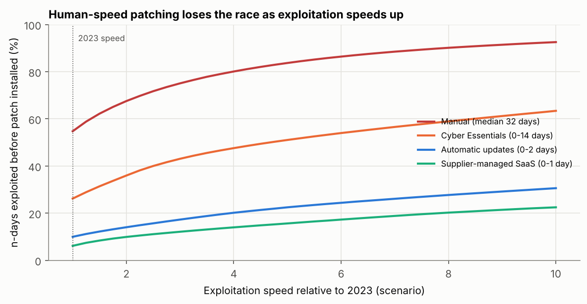
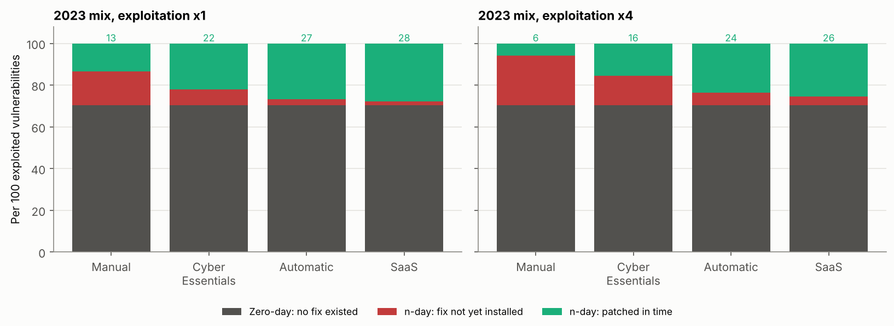

Unit 12: The Great Debate – What Will Be the Most Influential Trend in SRM in the Next Five Years?

The final unit of the module was a debate between two teams on which trend will shape security and risk management most over the next five years, followed by questions and a class vote. The artefacts below are the presentation I prepared for AI-enabled automation, a notebook that tests the claim the case rests on, my wiki entries for the two required readings, and my vote. The module as a whole is drawn together on the e-portfolio summary page.
Reflection
Structured using the What? So what? Now what? model (Rolfe, Freshwater and Jasper, 2001).
What?
Unit 12 asked each team to choose the trend it expected to be most influential in the next five years, present the case in ten minutes, defend it in discussion and then vote. The required reading was Marks’s (2019) guide to choosing a risk management framework, which I had already used in Unit 11, and Nicol et al.’s (2012) statement of five ‘hard problems’ for a science of security. I prepared a ten-slide presentation arguing that AI-enabled automation will be the most influential trend (Artefact 1), built a model to test the empirical claim behind it (Artefact 2), completed wiki entries for both readings (Artefact 3) and recorded my vote (Artefact 4). I did not keep notes of the discussion itself, which I regret, so these artefacts record my preparation and my position rather than the exchange in the seminar.
So what?
Preparing to argue a side changed how I used evidence. My Unit 11 recommendation was hedged: AI and automation for research, provided the claims were tested, and supplier concentration for a small business. A debate rewards a clear motion, and the obvious way to open was the most striking figure I had found, Mandiant’s estimate that the mean time from disclosure to exploitation fell to ‘an estimated -7 days’ in 2025 (Kutscher, 2026). Building the model in Artefact 2 made me less comfortable with that number. Charrier and Weiner (2024) show that 70% of the vulnerabilities exploited in 2023 were zero-days and 30% n-days, so the headline average is taken over two different populations. Holding the 2023 n-day timings fixed, the average moves from +5 to −7 days by changing only the share of zero-days and how early they are found. The negative mean is real, but on its own it does not show that attackers are turning published patches into exploits faster. I kept the figure on slide 3 and conceded the point on slide 8. Nicol et al. (2012) set the standard I had nearly ignored: a security metric should be ‘quantifiable, feasible, repeatable, and objective’ and ‘must be validated’. An average over a changing mix is none of these. It is the same failure I found in my own executive summary in Unit 7, a number reported without saying what it measured.
What the model did support was stronger than the headline. Even at 2023 speed, a business that patches when someone gets round to it, with the 32-day median that Verizon (2025) found for edge devices, loses the race for about 55% of n-days. The Cyber Essentials 14-day rule cuts this to about 26%, automatic updates to about 10% and a supplier-managed service to about 6%. Keeping losses to one n-day in ten needs every patch installed within about two days now, and within half a day if exploitation becomes four times faster. That changed my understanding of what ‘influential’ means here. AI matters to risk management less because defenders buy AI tools than because speed forces decisions to be made in advance and handed to automated rules: update settings, blocking thresholds, a provider’s patch process. That links directly to my Unit 11 rebuild of Ridley’s (2018) experiment, where an agent rewarded for cheap actions never isolated a node and a one-line rule beat it. Once decisions are delegated, the reward or threshold is the risk decision, and someone has to own it. The model also showed the limit of the argument: with seven in ten exploits arriving before any patch exists, patching reaches at most 30% of the problem, and the rest depends on containment and recovery, which is why the Unit 10 recommendation of a copy at a second provider under separate credentials still stands.
Nicol et al.’s paper was more useful as a lens on my own module than as a forecast. Its selection criteria included each problem’s ‘likelihood of benefiting from emphasis on scientific research methods and improved measurement capabilities’, so the list describes what researchers can study rather than what organisations fear most, and it has almost nothing on economics, regulation or dependence on suppliers. Scala et al. (2019) make a related criticism from the risk side: most sponsored cybersecurity research overlooks risk, and risk analysis should be built into each of the five problems. Read that way, my quantitative work in Units 7 to 11 was a series of small attempts at the metrics problem, the social engineering model in Unit 8 an attempt at the human behaviour problem, and the disaster recovery work in Units 9 and 10 an attempt at resilient architectures. Each attempt ran into the obstacle Nicol et al. describe: low-level numbers exist, but a defensible assessment of a whole system does not follow from them.
Marks (2019) helped with the rebuttals. His comparison found that none of the five frameworks he reviewed described roles and responsibilities or offered a RACI chart. If decisions move into automated rules, that gap matters more, not less. NIST CSF 2.0 now has a Govern function with a category for roles, responsibilities and authorities (NIST, 2024), which is where I argued ownership of automated decisions should be written down. That let me answer the governance case by treating it as the way AI’s influence is managed rather than as a rival trend.
I also had to deal with my own earlier view. In Unit 11 I argued that supplier concentration would affect Pampered Pets sooner than AI, and arguing the other side felt at first like abandoning that. Writing the opposing case on slide 7 resolved it: the two answer different questions, and for a small firm AI arrives through its suppliers’ products and patch processes. Writing the concessions first was the most valuable part of the preparation. The tutor’s comments on both of my assessed pieces said that limitations and gaps had not been acknowledged (Group 2, 2025; Stevens, 2026). A debate makes that weakness costly in real time, because the other side will name the gaps if you do not. A class poll can reward the better presentation rather than the better evidence, and I tried to make my case one that would survive a sceptical question about any of its numbers.
Now what?
Five changes follow. First, before I use a trend statistic I will ask what population it averages over and report the parts separately where I can, as I would now with time-to-exploit. Second, I will treat every automated decision as a risk decision: at work I intend to start a short register of automated rules, such as automatic blocking thresholds and update settings, each with a named owner and a review date. Third, for Pampered Pets the model gives a quantitative reason for advice I made in Unit 6: automatic updates on every device, rented services patched by the provider wherever possible, and the old warehouse PC replaced or isolated. Fourth, in any argued piece I will write the strongest opposing case and my concessions before the argument itself. Fifth, I will keep brief notes of discussions and meetings as evidence; their absence is the main gap in this unit’s record and in the team section of my end-of-module e-portfolio.
Artefact 1: Debate Presentation – AI-Enabled Automation
A ten-slide PowerPoint deck with speaker notes, timed at about ten minutes. Motion: ‘AI-enabled automation will be the most influential trend in security and risk management to 2031’.
| Slide | Message | Evidence |
|---|---|---|
| 1 | Motion | – |
| 2 | AI changes the speed of risk, so it changes who makes risk decisions: speed, scale and delegation | Summary of slides 3 to 6 |
| 3 | Mean time-to-exploit fell from 63 days (2018–19) to 5 days (2023) and an estimated −7 days (2025); 70% of 2023 exploits were zero-days | Charrier and Weiner (2024); Kutscher (2026) |
| 4 | Attackers already automate campaigns: an AI agent carried out 80–90% of one espionage campaign; access hand-offs fell to a median of 22 seconds | Anthropic (2025); Kutscher (2026); NCSC (2025) |
| 5 | Only automated patching keeps pace as exploitation speeds up | Artefact 2 |
| 6 | Automation turns three of Nicol et al.’s hard problems (metrics, human behaviour, resilient architectures) into everyday risk management | Nicol et al. (2012); Unit 11 rebuild of Ridley (2018) |
| 7 | Rival trends (supplier concentration, regulation and governance, human factors, post-quantum cryptography) are real but driven by automation | CMA (2025); Regulation (EU) 2022/2554; NIST (2024); Verizon (2025) |
| 8 | Concessions: headline metrics mix populations, few AI claims are tested against simple baselines, AI attackers still make mistakes | Artefact 2; Unit 11; Anthropic (2025) |
| 9 | Vote for automation and for governing it: measure it, own it, survive it | – |
| 10 | Sources | – |


The strongest argument against the motion is the one I made myself in Unit 11: for a business like Pampered Pets, dependence on a few cloud and software suppliers will matter sooner. The answer on slide 7 is that the two are not rivals. A small retailer will meet AI-enabled attacks, and AI-enabled defence, through the email, shop and accounting services it rents, so the supplier’s speed of response becomes the customer’s exposure. Post-quantum migration was the hardest rival to dismiss on importance, but it is a planned change over a decade and will not alter most risk decisions within five years.
Artefact 2: Racing the Exploit – Does Patching at Human Speed Still Work?
Python notebook: unit12_patch_race.ipynb. Uses the timing of the 41 n-days in Charrier and Weiner (2024), joined into an empirical curve, to estimate how often a vulnerability is exploited before a patch is installed under four patching policies, and repeats the test with exploitation two, four and eight times faster. The policy delays and the speed-ups are assumptions and scenarios, not measurements.
1. What the headline average measures

The n-days in the curve average about 60 days. If the reported 2023 mean of 5 days was taken over all 138 vulnerabilities, the zero-days must have been exploited about 18 days before disclosure on average; that is my inference, not a published figure. With the n-day curve fixed, a larger or earlier set of zero-days takes the mean below −7 days. The headline should be reported as two numbers: the n-day curve and the zero-day share.
2. The patching race

| Policy (delay from patch release to install) | 2023 speed | ×2 | ×4 | ×8 |
|---|---|---|---|---|
| Manual (lognormal, median 32 days) | 54.8% | 67.6% | 80.1% | 90.1% |
| Cyber Essentials (0–14 days) | 26.2% | 36.0% | 47.6% | 58.9% |
| Automatic updates (0–2 days) | 10.0% | 14.0% | 20.2% | 27.7% |
| Supplier-managed SaaS (0–1 day) | 6.2% | 9.9% | 14.0% | 20.2% |
Share of n-days exploited before the patch is installed. To keep this at or below 10%, every patch has to be installed within about 1.9 days at 2023 speed, 1.0 day at twice the speed and 0.5 days at four times.
3. How much patching can reach

With the 2023 mix, 70 of every 100 exploited vulnerabilities were zero-days, so even perfect patching protects against at most 30. The remaining exposure has to be handled by limiting what a compromised component can reach, detecting it and restoring from a copy it cannot touch, which is Nicol et al.’s (2012) resilient architectures problem and the approach recommended for Pampered Pets in Unit 10.
The limits are significant. The curve rests on 41 vulnerabilities tracked by one vendor, mostly in enterprise products, and first exploitation in the wild is not the same as exploitation of a particular small business, which usually comes later through mass scanning. The 365-day end point of the curve and the delay models are my assumptions, and treating exploitation and patching as independent ignores that the most publicised flaws tend to be patched and exploited fastest.
Artefact 3: Wiki Entries for the Future Trends Reading
Entries for the module wiki started in Unit 11, completing the two required readings for Unit 12.
Nicol, Sanders, Scherlis and Williams (2012) – Science of Security Hard Problems: A Lablet Perspective
Summary. Written by the leads of the three NSA-funded Science of Security Lablets at Illinois, Carnegie Mellon and North Carolina State, the paper selects five problems for their ‘level of technical challenge, their potential operational significance, and their likelihood of benefiting from emphasis on scientific research methods and improved measurement capabilities’, and sets out for each what is known and what research is needed.
| Hard problem | Statement (2012) | Where it stands now | Where it appeared in this module |
|---|---|---|---|
| Scalability and composability | Build secure systems with known properties from components with known properties, without re-analysing every component | Still open; most small firms now assemble their systems from rented services whose internals they cannot analyse at all | Vendor lock-in and supplier dependence (Unit 10) |
| Policy-governed secure collaboration | Express and enforce rules for handling data between users in different authority domains | Largely handled through law and contract rather than technology | UK and EU GDPR transfers and processor contracts for Pampered Pets (Unit 6) |
| Security-metrics-driven evaluation, design, development and deployment | Metrics and models that predict or confirm whether a system preserves its security properties in a given context | Low-level scores remain unreliable: 68% of experienced CVSS users changed at least one severity rating when they re-scored the same vulnerabilities (Wunder et al., 2024); headline trend metrics mix populations (Artefact 2) | Monte Carlo, Bayesian and multi-criteria models (Units 7 and 8) |
| Resilient architectures | Architectures that deliver required service in the face of compromised components | Now mainstream as zero trust, which assumes no implicit trust based on network location (Rose et al., 2020) | Business impact analysis and disaster recovery design (Units 9 and 10) |
| Understanding and accounting for human behaviour | Models of users and adversaries that support design and analysis of secure systems | Human judgement still shapes supposedly automated systems (Fahimnia et al., 2019); AI is changing the attacker side | Social engineering model (Unit 8); behavioural operations and autonomous defence (Unit 11) |
Critique. The paper is clear and its problem statements have aged well, but its selection rule favours problems that suit academic research methods. Economics, regulation and dependence on suppliers, three things that drove most of the decisions in my Pampered Pets work, appear only indirectly. It invokes Kelvin’s ‘If you cannot measure it, you cannot improve it’ and admits that ‘the challenge is to produce a quantitative assessment of the security of a system as a whole’. Fourteen years on, that is still the challenge. Scala et al. (2019) argue that most sponsored research on these problems overlooks risk considerations and that risk analysis should be built into each of them, which is the gap this module tries to fill from the other side. For the debate, the paper’s value is that AI-enabled automation touches four of the five problems at once.
Marks (2019) – The Optimal Risk Management Framework
Summary. Marks compares COBIT 5, NIST SP 800-37 Rev. 2, OCTAVE Allegro, ENISA guidance and the UK government’s former Information Assurance Standards 1 and 2, and lists questions for choosing between them, concluding that practitioners ‘should use the simplest framework that meets their requirements’.
Critique. As I noted in Unit 11, the comparison was out of date within a few years, leaves out FAIR and contains citation errors. For the debate, its most useful finding is a gap: none of the frameworks compared describes roles and responsibilities or offers a RACI chart, and none uses quantitative factors to evaluate risk. Automated decision making makes the first gap more serious, because an automated rule or threshold needs a named owner. NIST CSF 2.0 has since added a Govern function that covers roles, responsibilities and authorities (NIST, 2024), which is where that ownership belongs.
Artefact 4: My Vote
Vote: AI-enabled automation, in attack and defence.
It is the trend that changes the clock every other risk process runs on. The evidence that exploitation has accelerated is strong, even allowing for the way the headline metric mixes zero-days and n-days, and the consequence for defenders follows directly: decisions that used to be taken by people in days now have to be written in advance into rules that act in hours. That moves risk management from assessing risks to designing and owning the rules that respond to them. Supplier concentration was the strongest alternative, and for a four-person business such as Pampered Pets it is the channel through which this trend will arrive.
What would change my vote: evidence that n-day exploitation is not getting faster once zero-days are separated out, or independent tests showing that AI-based defensive tools do no better than simple rules in real use. Either would suggest that the trend is louder than it is influential.
References
Anthropic (2025) ‘Disrupting the first reported AI-orchestrated cyber espionage campaign’, Anthropic news, 13 November. Available at: https://www.anthropic.com/news/disrupting-AI-espionage (Accessed: 3 October 2026).
Charrier, C. and Weiner, R. (2024) ‘How low can you go? An analysis of 2023 time-to-exploit trends’, Google Cloud blog: threat intelligence, 15 October. Available at: https://cloud.google.com/blog/topics/threat-intelligence/time-to-exploit-trends-2023 (Accessed: 3 October 2026).
Competition and Markets Authority (CMA) (2025) Cloud services market investigation: summary of final decision, 31 July. London: CMA. Available at: https://assets.publishing.service.gov.uk/media/688b20e6ff8c05468cb7b120/summary_of_final_decision.pdf (Accessed: 3 October 2026).
Fahimnia, B., Pournader, M., Siemsen, E., Bendoly, E. and Wang, C. (2019) ‘Behavioral operations and supply chain management – a review and literature mapping’, Decision Sciences, 50(6), pp. 1127–1183. Available at: https://doi.org/10.1111/deci.12369 (Accessed: 3 October 2026).
Group 2 (2025) A risk assessment report for Pampered Pets based on ISO/IEC 27005:2022 and ISO 31000:2018. Unpublished team report, Security and Risk Management module. University of Essex Online.
Kutscher, J. (2026) ‘M-Trends 2026: data, insights, and strategies from the frontlines’, Google Cloud blog: threat intelligence, 23 March. Available at: https://cloud.google.com/blog/topics/threat-intelligence/m-trends-2026 (Accessed: 3 October 2026).
Marks, L. (2019) ‘The optimal risk management framework: identifying the requirements and selecting the framework’, ISACA Journal, 1, pp. 40–45. Available at: https://www.isaca.org/resources/isaca-journal/issues/2019/volume-1/the-optimal-risk-management-framework-identifying-the-requirements-and-selecting-the-framework (Accessed: 3 October 2026).
National Cyber Security Centre (NCSC) (2025) Impact of AI on cyber threat from now to 2027, 7 May. London: NCSC. Available at: https://www.ncsc.gov.uk/report/impact-ai-cyber-threat-now-2027 (Accessed: 3 October 2026).
NCSC (2026) Cyber Essentials: requirements for IT infrastructure, v3.3. London: National Cyber Security Centre. Available at: https://www.ncsc.gov.uk/files/cyber-essentials-requirements-for-it-infrastructure-v3-3.pdf (Accessed: 3 October 2026).
National Institute of Standards and Technology (NIST) (2024) The NIST Cybersecurity Framework (CSF) 2.0. NIST Cybersecurity White Paper 29. Gaithersburg, MD: NIST. Available at: https://doi.org/10.6028/NIST.CSWP.29 (Accessed: 3 October 2026).
Nicol, D.M., Sanders, W.H., Scherlis, W.L. and Williams, L.A. (2012) Science of security hard problems: a lablet perspective. Science of Security Virtual Organization, 27 November. Available at: https://sos-vo.org/node/6394 (Accessed: 3 October 2026).
Regulation (EU) 2022/2554 of the European Parliament and of the Council of 14 December 2022 on digital operational resilience for the financial sector (DORA). Official Journal of the European Union, L 333, 27 December 2022. Available at: https://eur-lex.europa.eu/eli/reg/2022/2554/oj (Accessed: 3 October 2026).
Ridley, A. (2018) ‘Machine learning for autonomous cyber defense’, The Next Wave, 22(1), pp. 7–14. Fort Meade, MD: National Security Agency. Available at: https://www.govinfo.gov/content/pkg/GPO-TNW-22-1-2018/pdf/GPO-TNW-22-1-2018.pdf (Accessed: 3 October 2026).
Rolfe, G., Freshwater, D. and Jasper, M. (2001) Critical reflection in nursing and the helping professions: a user’s guide. Basingstoke: Palgrave Macmillan.
Rose, S., Borchert, O., Mitchell, S. and Connelly, S. (2020) Zero trust architecture. NIST Special Publication 800-207. Gaithersburg, MD: National Institute of Standards and Technology. Available at: https://doi.org/10.6028/NIST.SP.800-207 (Accessed: 3 October 2026).
Scala, N.M., Reilly, A.C., Goethals, P.L. and Cukier, M. (2019) ‘Risk and the five hard problems of cybersecurity’, Risk Analysis, 39(10), pp. 2119–2126. Available at: https://doi.org/10.1111/risa.13309 (Accessed: 3 October 2026).
Stevens, I. (2026) Quantitative risk assessment and digital resilience strategy for Pampered Pets: executive summary. Unpublished assignment, Security and Risk Management module. University of Essex Online.
Verizon (2025) 2025 Data Breach Investigations Report. Basking Ridge, NJ: Verizon Business. Available at: https://www.verizon.com/business/resources/reports/2025-dbir-data-breach-investigations-report.pdf (Accessed: 3 October 2026).
Wunder, J., Kurtz, A., Eichenmüller, C., Gassmann, F. and Benenson, Z. (2024) ‘Shedding light on CVSS scoring inconsistencies: a user-centric study on evaluating widespread security vulnerabilities’, in 2024 IEEE Symposium on Security and Privacy (SP). San Francisco, CA: IEEE, pp. 1102–1121. Available at: https://doi.org/10.1109/SP54263.2024.00058 (Accessed: 3 October 2026).